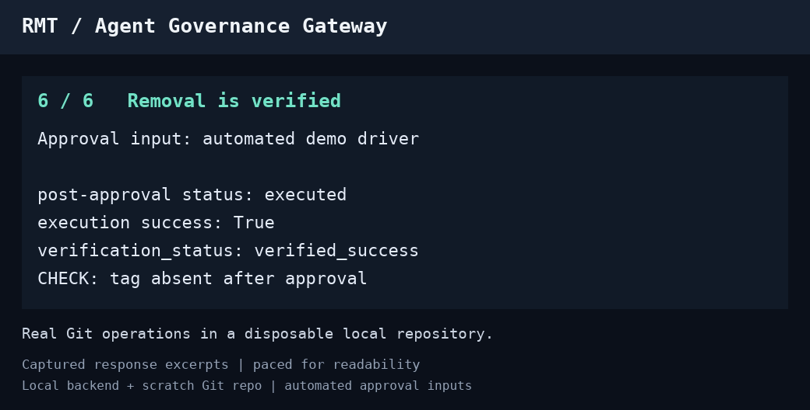
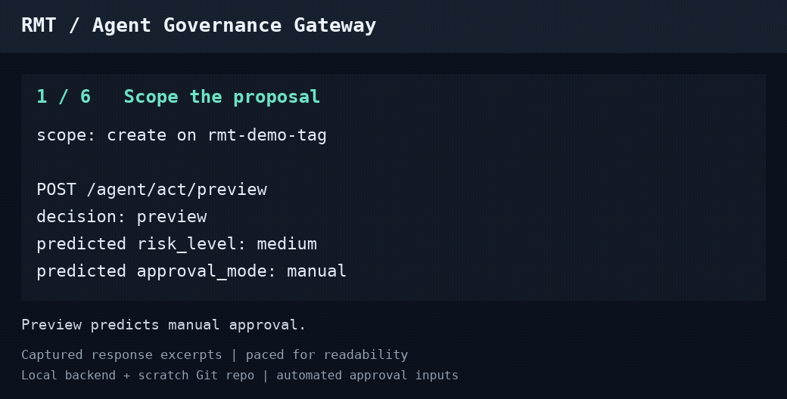

Open source · MIT licensed
Inspect an agent action.
Before and after execution.
Policy checks, approval holds, and execution evidence for operations submitted through RMT's Agent Governance Gateway.
A configured local backend, Python, and a disposable Git repository are required. No LLM is needed for the walkthrough.
A real, recorded example
A Git tag, an approval hold, and a result you can inspect.

Watch the 24-second animated excerpts

Follow the decision through to its outcome.
Preview the proposal
Inspect predicted policy, risk, and approval requirements before submitting an operation.
Resolve the hold
When policy requires approval, the proposal waits for an operator decision through the governed continuation.
Inspect the evidence
Read the execution outcome and available verification result. An unavailable observation is not verified success.
Built for a defined operating boundary.
RMT stands for Risk-Mitigated Transactions. It is a general-purpose control, execution, and governance platform; agent governance is one capability built on its common lifecycle.
This walkthrough targets trusted operators and a single backend process. RMT governs operations submitted through its gateway; arbitrary host access remains outside that boundary. Approval requirements depend on policy, and there is no general exactly-once guarantee.
Help make the first run easier.
Try the disposable Git-tag example and tell us where setup becomes confusing or which execution details you need. Small documentation contributions are welcome.